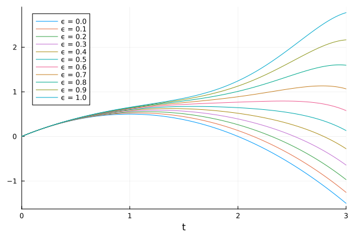
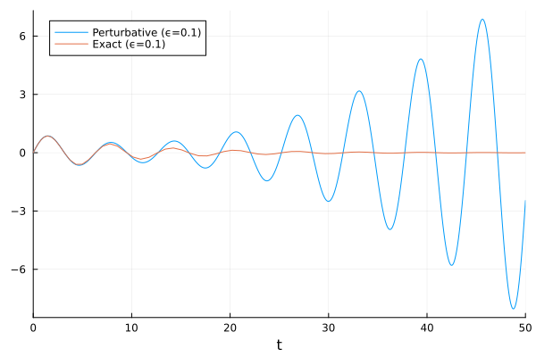

Symbolic-Numeric Perturbation Theory for ODEs
In the Mixed Symbolic-Numeric Perturbation Theory tutorial, we discussed how to solve algebraic equations using Symbolics.jl. Here we extend the method to differential equations. The procedure is similar, but the Taylor series coefficients now become functions of an independent variable (usually time).
Free fall in a varying gravitational field
Our first ODE example is a well-known physics problem: what is the altitude $x(t)$ of an object (say, a ball or a rocket) thrown vertically with initial velocity $ẋ(0)$ from the surface of a planet with mass $M$ and radius $R$? According to Newton's second law and law of gravity, it is the solution of the ODE
\[ẍ = -\frac{GM}{(R+x)^2} = -\frac{GM}{R^2} \frac{1}{\left(1+ϵ\frac{x}{R}\right)^2}.\]
In the last equality, we introduced a perturbative expansion parameter $ϵ$. When $ϵ=1$, we recover the original problem. When $ϵ=0$, the problem reduces to the trivial problem $ẍ = -g$ with constant gravitational acceleration $g = GM/R^2$ and solution $x(t) = x(0) + ẋ(0) t - \frac{1}{2} g t^2$. This is a good setup for perturbation theory.
To make the problem dimensionless, we redefine $x \leftarrow x / R$ and $t \leftarrow t / \sqrt{R^3/GM}$. Then the ODE becomes
using ModelingToolkit
using ModelingToolkit: t_nounits as t, D_nounits as D
@variables ϵ x(t)
eq = D(D(x)) ~ -(1 + ϵ * x)^(-2)Differential(t, 2)(x(t)) ~ -((1 / (1 + x(t)*ϵ))^2)Next, expand $x(t)$ in a series up to second order in $ϵ$:
using Symbolics
x_coeffs = @variables x₀(t) x₁(t) x₂(t) # 0th, 1st and 2nd order coefficients
x_series = series(x_coeffs, ϵ)x₀(t) + x₁(t)*ϵ + x₂(t)*(ϵ^2)Insert this into the equation and collect perturbed equations to each order:
eq_pert = substitute_in_deriv(eq, x => x_series) # also substitute inside D(D(x))
eqs_pert = taylor_coeff(eq_pert, ϵ, 0:2)3-element Vector{Equation}:
Differential(t, 2)(x₀(t)) ~ (-1//1)
Differential(t, 2)(x₁(t)) ~ 2x₀(t)
Differential(t, 2)(x₂(t)) ~ (4x₁(t) - 6(x₀(t)^2)) / 2The 0-th order equation can be solved analytically, but ModelingToolkit does currently not feature automatic analytical solution of ODEs, so we proceed with solving it numerically.
These are the ODEs we want to solve. Now construct an System, which automatically inserts dummy derivatives for the velocities:
@mtkcompile sys = System(eqs_pert, t)Model sys:
Equations (6):
6 standard: see equations(sys)
Unknowns (6): see unknowns(sys)
x₂(t)
x₁(t)
x₀(t)
x₂ˍt(t)
⋮To solve the System, we generate an ODEProblem with initial conditions $x(0) = 0$, and $ẋ(0) = 1$, and solve it:
using OrdinaryDiffEq
u0 = [x₀ => 0.0, x₁ => 0.0, x₂ => 0.0, D(x₀) => 1.0, D(x₁) => 0.0, D(x₂) => 0.0]
prob = ODEProblem(sys, u0, (0.0, 3.0))
sol = solve(prob)retcode: Success
Interpolation: 3rd order Hermite
t: 17-element Vector{Float64}:
0.0
0.0009990005004983772
0.020708314786087156
0.06894731869334476
0.13253582182187518
0.21036076542030058
0.30632803825525945
0.42593588394873005
0.5774540453615378
0.7697466565216907
1.014937005005464
1.3292834879470894
1.6920296325025312
2.071933756757127
2.4735614550397287
2.937624189039
3.0
u: 17-element Vector{Vector{Float64}}:
[0.0, 0.0, 0.0, 0.0, 0.0, 1.0]
[-2.488196097577267e-13, 3.3225183183212947e-10, 0.0009985014994983792, -9.96091672587352e-10, 9.976696651635089e-7, 0.9990009994995016]
[-4.527896778109e-8, 2.9448203291609016e-6, 0.020493897635447317, -8.712559925343637e-6, 0.0004258741560456801, 0.9792916852139129]
[-5.367134414212015e-6, 0.00010736921115519868, 0.06657045231584394, -0.0003073279628567118, 0.004644480379254272, 0.9310526813066553]
[-6.980712897569566e-5, 0.0007503171615173193, 0.12375294978887527, -0.002052745258608169, 0.016789713957433124, 0.8674641781781249]
[-0.00041667948092658603, 0.0029397530465558224, 0.18823493960619325, -0.007589307242211475, 0.041148714525673376, 0.7896392345796995]
[-0.0017320767075391559, 0.0088478413291884, 0.2594096047446017, -0.021167795698629213, 0.08425524589109573, 0.6936719617447407]
[-0.005840710977795418, 0.023015148550128955, 0.3352251953311372, -0.04967314257937785, 0.15566341900856412, 0.5740641160512701]
[-0.017159256298243237, 0.054918709886482814, 0.41072745810933553, -0.10240019568061678, 0.26926854631899944, 0.42254595463846245]
[-0.044580129252127704, 0.12277184209701167, 0.4734916989085302, -0.18381298666826487, 0.4404824064925175, 0.23025334347830959]
[-0.10123265929080992, 0.26006955624791617, 0.499888442940734, -0.27024939809474324, 0.681602560786562, -0.014937005005463607]
[-0.1882406081015135, 0.5227564206996228, 0.44578619228270056, -0.2476593356583539, 0.9840490134803923, -0.32928348794708884]
[-0.2235545665254375, 0.9316930935683745, 0.2605474938692075, 0.1266781990756235, 1.2482241459561962, -0.6920296325025306]
[-0.024286458718047098, 1.4291187048409741, -0.07452098943772163, 0.9983255228277838, 1.3280347950612623, -1.0719337567571265]
[0.6188868100963697, 1.9251571755984034, -0.5856916808893982, 2.205175292417584, 1.0736725130291238, -1.473561455039728]
[1.8529049268476956, 2.244324417937521, -1.3771937489745165, 2.8068787920050053, 0.1794268453551227, -1.9376241890389991]
[2.024992891036536, 2.2500000000000067, -1.4999999999999951, 2.7000000000000277, 1.4694173858928258e-14, -1.9999999999999991]This is the solution for the coefficients in the series for $x(t)$ and their derivatives. Finally, we calculate the solution to the original problem by summing the series for different $ϵ$:
using Plots
ϵs = 0.0:0.1:1.0
plot(sol; idxs = [substitute(x_series, ϵ => ϵᵢ) for ϵᵢ in ϵs], label = permutedims(["ϵ = $ϵᵢ" for ϵᵢ in ϵs]))
This makes sense: for larger $ϵ$, gravity weakens with altitude, and the trajectory goes higher for a fixed initial velocity.
An advantage of the perturbative method is that we run the ODE solver only once and calculate trajectories for several $ϵ$ for free. Had we solved the full unperturbed ODE directly, we would need to do repeat it for every $ϵ$.
Weakly nonlinear oscillator
Our second example applies perturbation theory to nonlinear oscillators – a very important class of problems. As we will see, perturbation theory has difficulty providing a good solution to this problem, but the process is nevertheless instructive. This example closely follows chapter 7.6 of Nonlinear Dynamics and Chaos by Steven Strogatz.
The goal is to solve the ODE
eq = D(D(x)) + 2 * ϵ * D(x) + x ~ 0x(t) + Differential(t, 2)(x(t)) + 2Differential(t, 1)(x(t))*ϵ ~ 0with initial conditions $x(0) = 0$ and $ẋ(0) = 1$. With $ϵ = 0$, the problem reduces to the simple linear harmonic oscillator with the exact solution $x(t) = \sin(t)$.
We follow the same steps as in the previous example to construct the System:
eq_pert = substitute_in_deriv(eq, x => x_series)
eqs_pert = taylor_coeff(eq_pert, ϵ, 0:2)
@mtkcompile sys = System(eqs_pert, t)Model sys:
Equations (6):
6 standard: see equations(sys)
Unknowns (6): see unknowns(sys)
x₂(t)
x₁(t)
x₂ˍt(t)
x₀(t)
⋮We solve and plot it as in the previous example, and compare the solution with $ϵ=0.1$ to the exact solution $x(t, ϵ) = e^{-ϵ t} \sin(\sqrt{(1-ϵ^2)}\,t) / \sqrt{1-ϵ^2}$ of the unperturbed equation:
u0 = [x₀ => 0.0, x₁ => 0.0, x₂ => 0.0, D(x₀) => 1.0, D(x₁) => 0.0, D(x₂) => 0.0]
prob = ODEProblem(sys, u0, (0.0, 50.0))
sol = solve(prob)
plot(sol, idxs = substitute(x_series, ϵ => 0.1); label = "Perturbative (ϵ=0.1)")
x_exact(t, ϵ) = exp(-ϵ * t) * sin(√(1 - ϵ^2) * t) / √(1 - ϵ^2)
@assert isapprox(
plot!(sol.t, x_exact.(sol.t, 0.1); label = "Exact (ϵ=0.1)")
This is similar to Figure 7.6.2 in Nonlinear Dynamics and Chaos. The two curves fit well for the first couple of cycles, but then the perturbative solution diverges from the exact solution. The main reason is that the problem has two or more time-scales that introduce secular terms in the solution. One solution is to explicitly account for the two time scales and use an analytic method called two-timing, but this is outside the scope of this example.